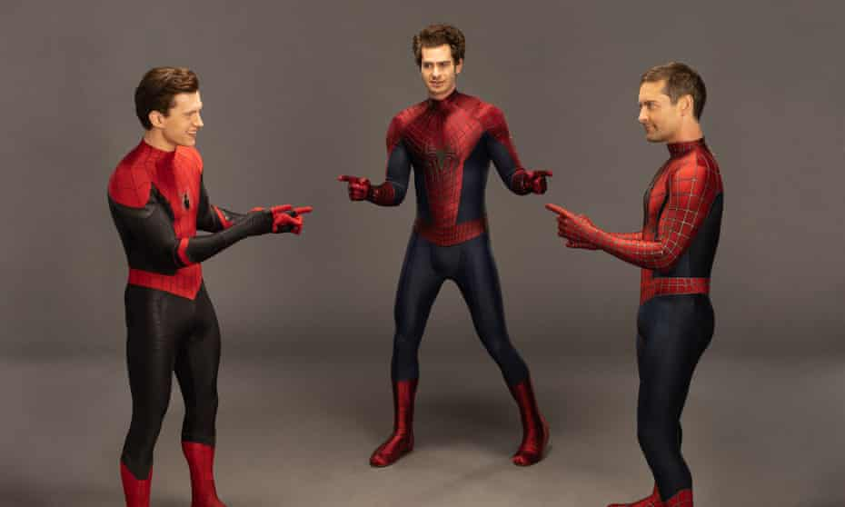
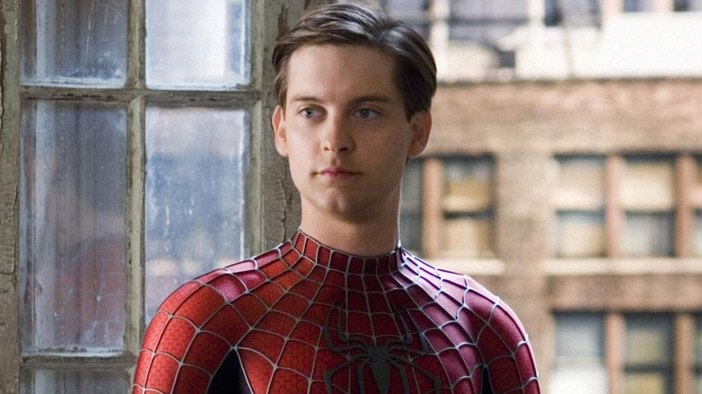
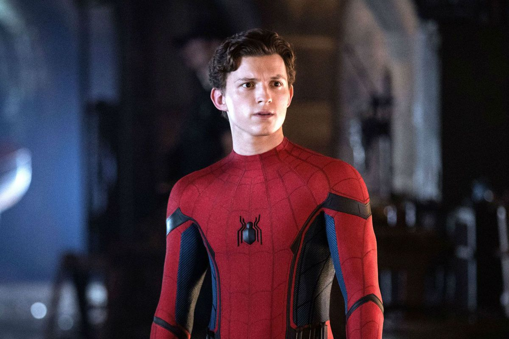
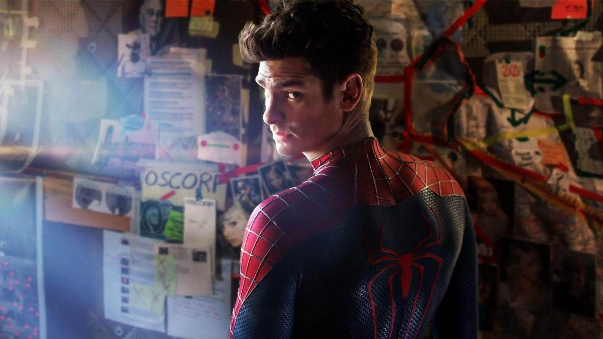

Who is the best Spider-man
Live-action actors: Tobey Maguire, Tom Holland, and Andrew Garfield

Tom holland has the best suits of all the Spider-man movies, but is he really the best Spider-man?
Andrew really digs deep with the emotions behind Spider-man, but is he the best Spider-man?
And Tobey is just the one that started this live-action series, but is he really the best?

Tobey is just an all rounder. He's the one that started the live action Spider-man,
his character is someone who we will always appreciate.
In my opinion his movies were not the best, which is why his franchise ended so quickly.
But he was the first, and I guess I should respect that.
 
Tom and Andrew BOTH are undefeated when it comes to who is the better Spider-man.
There's no way you can just chose one between the two, like their movies are amazing.
Both actors are able to connect emotionally to Spider-man and make the movies amazing.
Tom and Andrew definitely win this!